On show night, children ran into its mouth and pretended to be swallowed. Adults stood between its teeth and posed for photos. No one kept a careful distance. No one treated it like a student project.
The Sea Monster is a room-scale inflatable installation composed of nylon, costume fans, and stage lighting. Two halves of an open head and five illuminated tentacles sit across WQED Studio A as fragments of a much larger creature, with the gallery floor standing in for the surface of the sea.
Why the Sea Monster
The design question of the installation is a difficult one to answer. The theme of the exhibition is “a fixed world”, after global warming, the AI bubble, the wars, the sixth extinction and even the Anthropocene itself. When everything is fixed from humans and back to normal, what are we expecting?
Our early ideas were gentle. Bioluminescent flowers, fireflies, things that glow and comfort. Then someone suggested the ocean, and I started thinking about Moby-Dick and Vingt mille lieues sous les mers. Sea Monsters, I said.
In the 19th century, slaying the sea monster was once the highest proof of courage. Now, we have gone too far. The only creature we could fear now is ourselves. Instead of presenting something non-threatening and comforting to humans, what about just exhibiting something… in the wild? A symbol of the untamed nature that we have drifted too far from?
The group liked the idea. We started imagining a hybrid: the head of a whale, the teeth of a shark, the tentacles of an octopus. It does not please, does not have the intent to hurt people, just exists in its own right.

The Ocean in the Room
We treated the gallery floor as the surface of the sea. If we only showed the tips of the tentacles and the top of the head, visitors would have to imagine the rest of the body underneath. The creature would feel larger than anything we actually built. It was a good strategy for one month of working time.
We planned two halves of an open head and five tentacles, placed across WQED Studio A so the fragments occupied the room without filling it. The mouth faced an entrance, so people would realize they were walking between its teeth. On the other side, another group's project, a giant glowing snail, waited like a place to escape into.
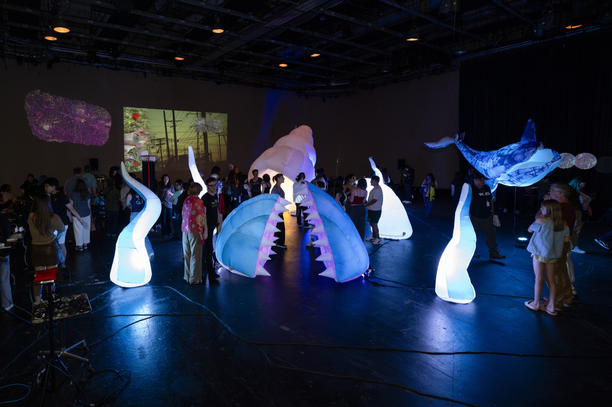
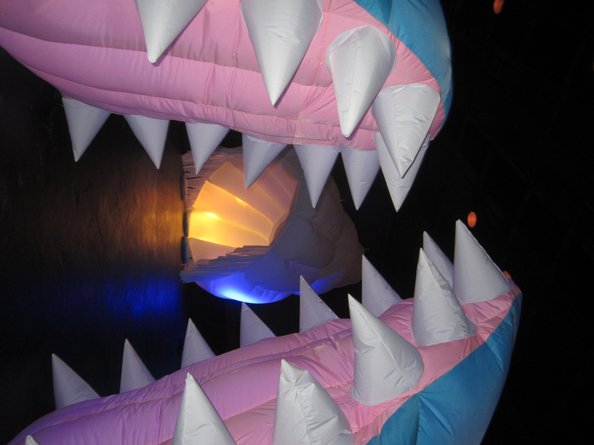
From Flat to Full
The head and tentacles began as digital models, then got unwrapped into flat panels, cut from nylon, and sewn back into volume. In this part, I modeled all five tentacles. The seams had to be precise enough for the fabric to recover the modeled curves once air filled it, so the tentacles would not leak air or shift their shape. To keep the head in shape, we added inner baffles, structures that control the air flow speed in an inflatable.
I also dyed the fabric one color at a time since they were white. Blue for the exterior of the head, pink for the inside of the mouth. The teeth and internal baffles stayed white.
Some parts of the creature were far larger than a person, which meant we could not sew them alone. Laying out, pinning, and stitching the larger panels was a two to three person task every time. The work was slow, but when a tentacle inflated for the first time and stood up on its own, the whole team applauded.
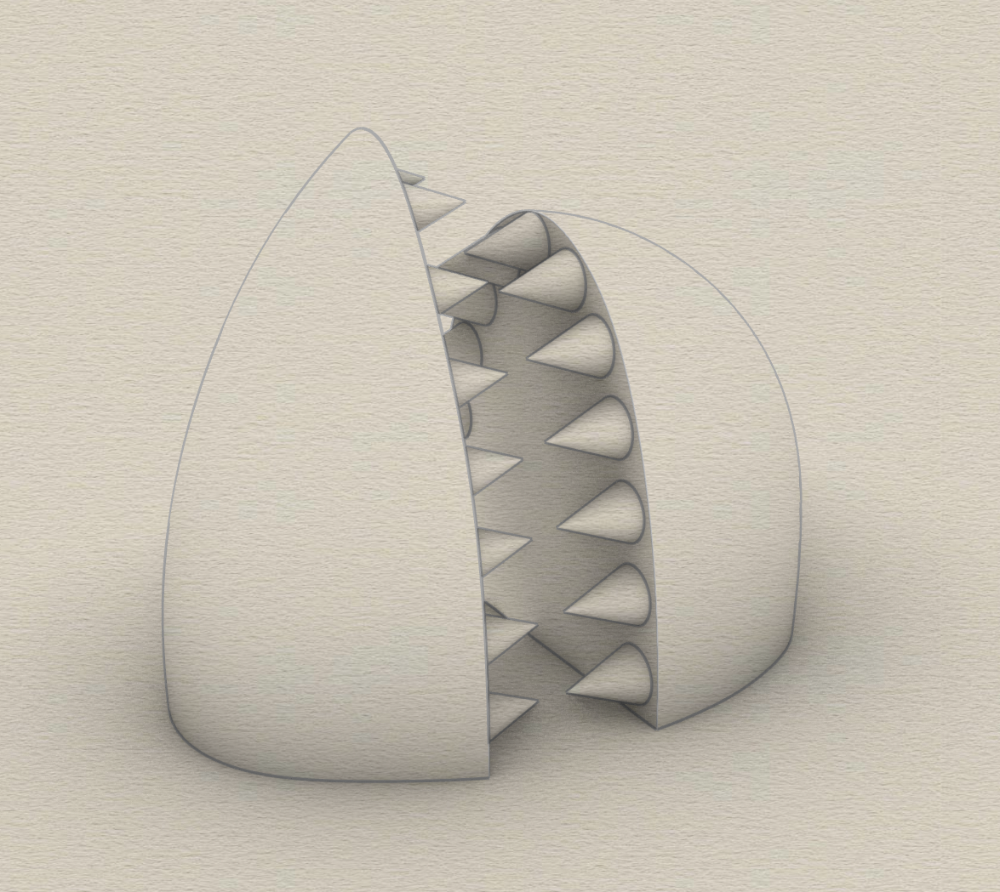

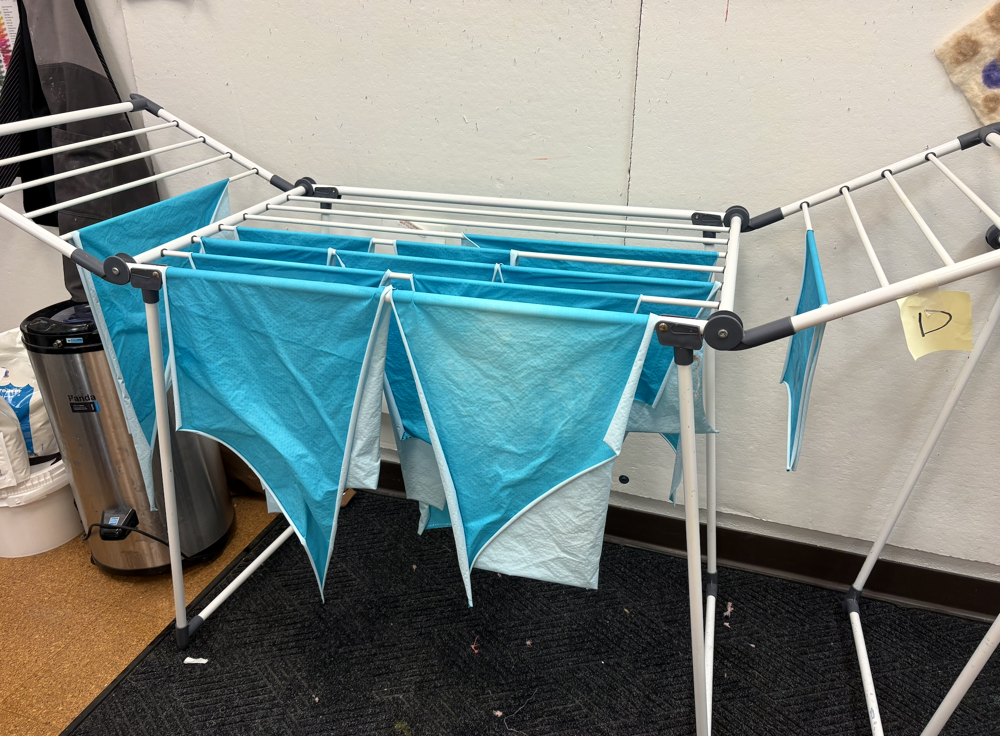
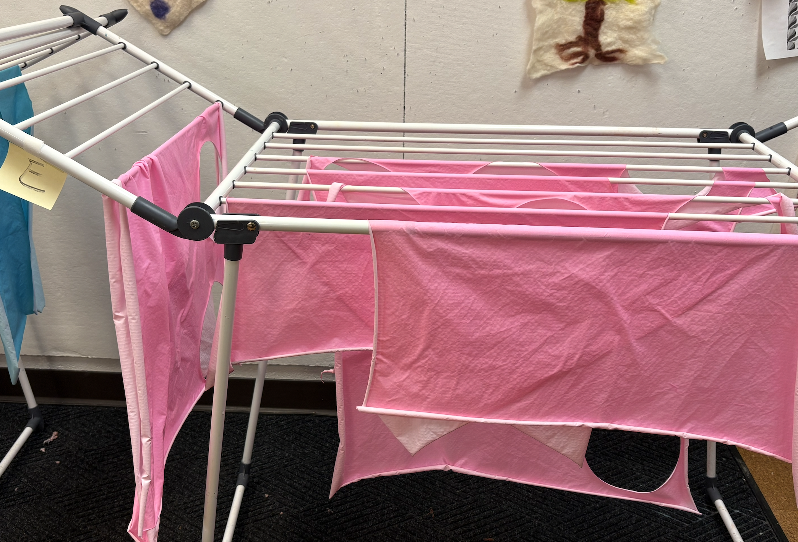
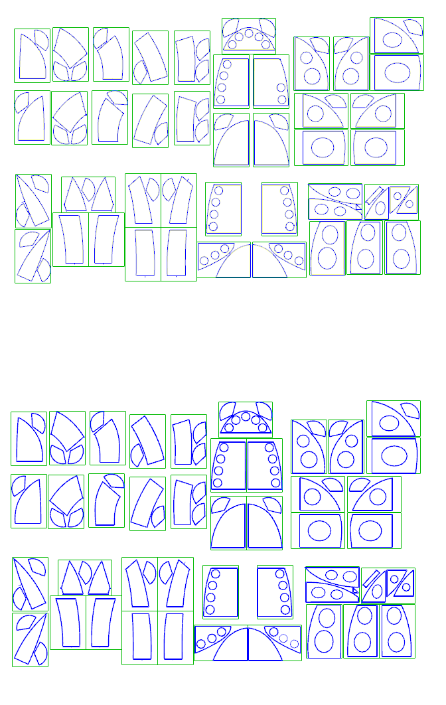

Soft Things
In architecture, people observe models from a careful distance and almost never touch them. Soft fabrication inverts that. Inflated fabric gives people the impression that it will not break, so they do not hesitate. Everyone has been inside a bouncy castle. The material carries that memory before you say a word.
The installation asked for our bodies too. We stood inside the studio to decide where each piece should go, then one of us walked back to see if the placement looked right from a distance. We crouched to install lights, crawled under fabric to find fan connections, held panels above our heads during inflation. There was no way to build this from a desk. Every decision was made at full scale, with our own bodies as the reference.
There is also something disarming about an object this large being this temporary. The entire creature compresses into a few bags. It fills a room and then it disappears. A week later it can fill a different room and become something else entirely.
Most of what we live in does not work like that. The buildings around us stay where they are, bound to their sites and to the investments that put them there. This creature has no site. It borrows a room, transforms it, and gives it back.


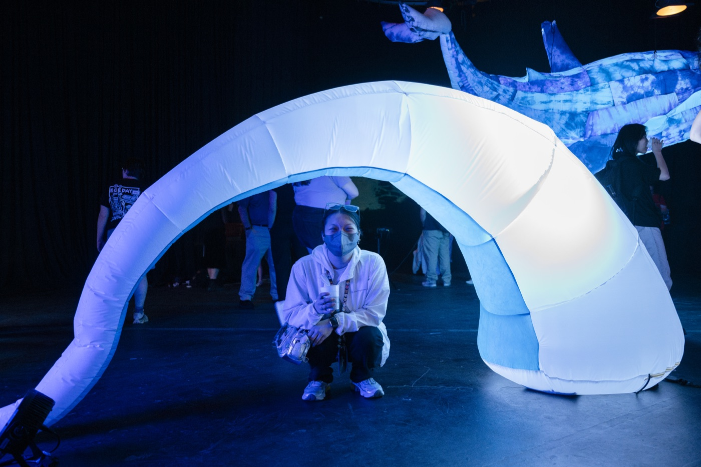
Public Life
On show night, the music and drama students projected waves and deep-water footage onto the surrounding screens. The studio went dark. With stage lights glowing inside the tentacles and the mouth lit from within, the room stopped feeling like a gallery and started feeling like the bottom of something.
Children were the first to test it. They ran straight into the mouth and pretended to be swallowed. Adults followed, standing between the teeth, waving at cameras, sitting inside as if it were a place that had always been there. No one asked if they were allowed to enter. No one treated it like something that might break.
We had designed the creature around an idea about coexistence. It’s something that simply exists in its own right, not for us. But once it entered the room, it stopped being ours. People brought their own readings, their own play, their own reasons for walking in. That is how public work operates. The intention travels with the object, but it does not get to decide what happens next.
The Sea Monster was shown again at Ideate's 2026 Meet Me@ exhibition.
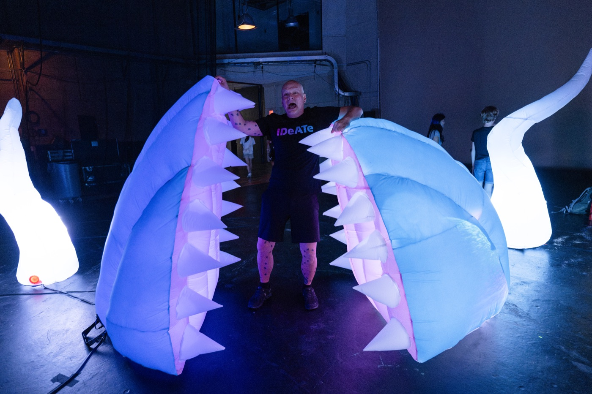
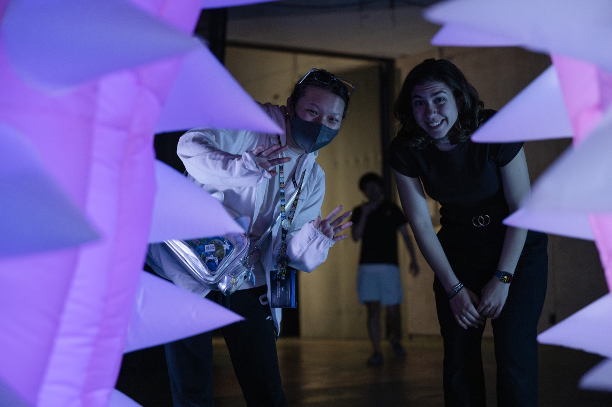
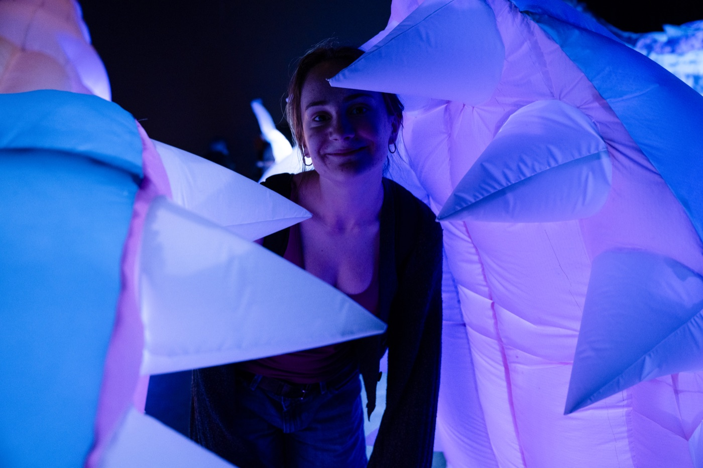

Acknowledgment
This was a five-person collaboration, and every part of it was shared. We are grateful to our faculty advisor Olivia Robinson, whose material knowledge and sustained presence throughout installation helped carry an ambitious idea into the room.
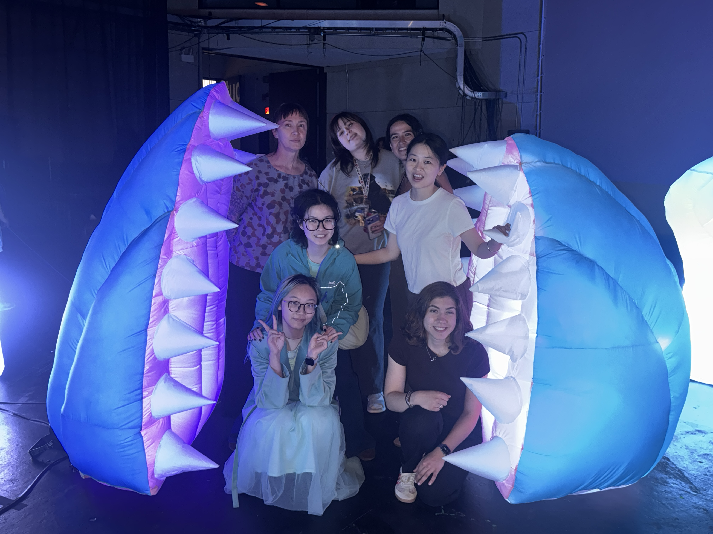